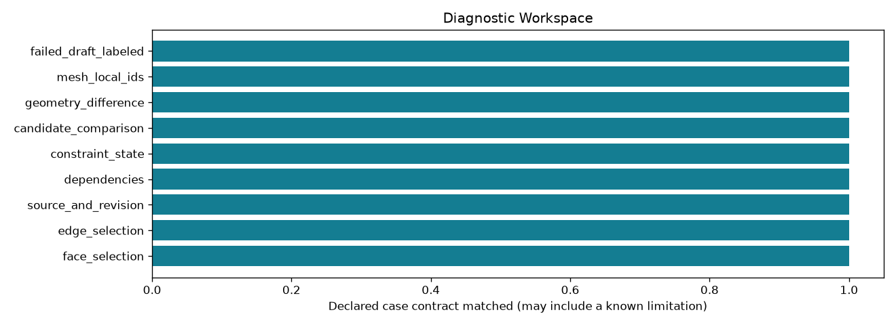

Offline, bounded research controls. A passing check may document a failure or an abstention.
| control_id | outcome | checks_pass |
|---|---|---|
| face_selection | matched | True |
| edge_selection | matched | True |
| source_and_revision | matched | True |
| dependencies | matched | True |
| constraint_state | matched | True |
| candidate_comparison | matched | True |
| geometry_difference | matched | True |
| mesh_local_ids | matched | True |
| failed_draft_labeled | matched | True |
Detailed evidence · CSV · Contract
